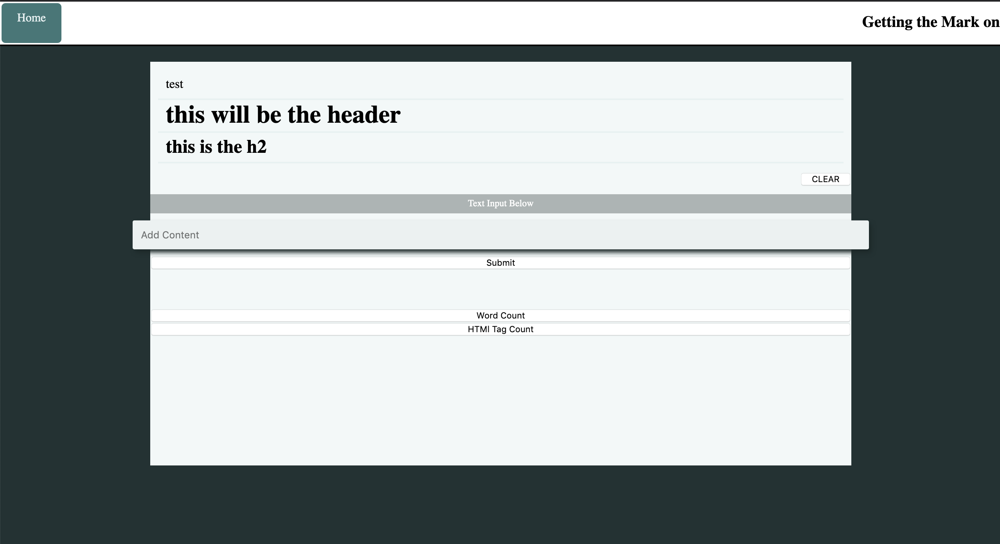
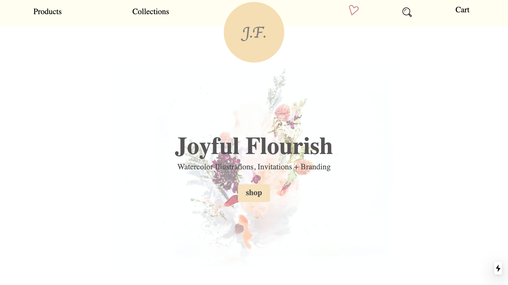

Interest
I have been learning about building digital products for 4 years(2017). Inspired to remove some of the "copping and pasting" of results. Ultimately landing on Python, which led me to become a Full Stack Engineer and able to see what is possible through coding. Full-stack resonates with me. It gives me the opportunity to see how everything is connected and how to work with different areas.
-
Front-end Experiences
I have worked on building with basic HTML/CSS to client-render apps. Primarily focused on building user Interfaces with React.js. Learning best practices and the whole React ecosystem. I have favored working with the Next.js for server-side rendering and dabbled building static sites with Gatsby.
-
Back-end Knowledge
I built a couple of REST APIs using Express.js and Django REST Framework. I worked on cleaning up data and saving it to a database. Still, a lot to learn but like to be able to understand the full spectrum of a web application.
-
Splash of Database
when building a web application, the data would have to be retrieved and saved. Written some SQL to query some data and save the results. Wanting to create a database that would scale to my project and allow me to add tables without duplicating files.
What I am About
I have work 15 years in the Mechanical Engineering field. I have contributed to successful competition and won the right to develop and build products for Automotive companies. While my time there I have work with a diverse group of people who have a different way of thinking. I contribute my soft skill to the time spent working on challenging projects. Below are things that I have realized about myself.
-
OPEN
Allowing be open to different point of views and Explore different possibilities. I enjoy taking the time learning about these things without any specific purpose.
-
CURIOUS
Naturally curious about things that are strange and new. To be in tech, there should be a drive to continue to look for a new concept or the next API that would help complete that task.
-
Discovery
I discover patterns that are similar to work that have done in the past. Find interesting patterns across multiple contexts. I am able to connect multiple interests and skills that seem unrelated.
-
Diverse
I discover patterns that are similar to work that have done in the past. Find interesting patterns across multiple contexts. I am able to connect multiple interests and skills that seem unrelated.
Projects
Below are a few of my projects that have peeked my interest at one time.
-
MarkDown Editor
A simple React application that was built for a Day Hackathon. Objective was created a Markdown convert to HTML tag editor.
 Source Code -
Gatsby Blog
Gatsby blog, that was built to get a better understanding on how Gatsby works and some familiarity with graphql.

Source Code -
JAMstack e-commerce
Working progress for a local client looking to be able to sell products. I wanted to know how to design and code am e-commerce shop and to work with a designer to get thier product to market. Build a functional and prectical e-shop.

Private Source Code